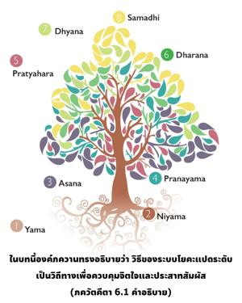
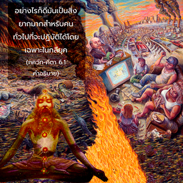

องค์ภควานฺตรัสว่า ผู้ที่ไม่ยึดติดต่อผลงานของตน และทำงานไปตามหน้าที่เป็นผู้ที่อยู่ในระดับชีวิตสละโลก และเป็นโยคีที่แท้จริงมิใช่ผู้ที่ไม่ก่อไฟและไม่ปฏิบัติหน้าที่


ในบทนี้องค์ภควานฺทรงอธิบายว่า วิธีของระบบโยคะแปดระดับเป็นวิถีทางเพื่อควบคุมจิตใจและประสาทสัมผัส อย่างไรก็ดี มันเป็นสิ่งยากมากสำหรับคนทั่วไปที่จะปฏิบัติได้โดยเฉพาะในกลียุค ถึงแม้ระบบโยคะแปดระดับได้แนะนำไว้ในบทนี้ พระองค์ทรงเน้นว่าวิธีของ กรฺม -โยค หรือการปฏิบัติในกฺฤษฺณจิตสำนึกดีกว่า ทุกคนปฏิบัติตนในโลกนี้เพื่อค้ำจุนครอบครัว และทรัพย์สมบัติของตน ไม่มีผู้ใดทำงานโดยปราศจากความเห็นแก่ตัว หรือเพื่อสนองตอบส่วนตัวบางประการไม่ว่าในวงแคบหรือวงกว้าง บรรทัดฐานแห่งความสมบูรณ์คือการปฏิบัติในกฺฤษฺณจิตสำนึก และไม่ใช่ด้วยแนวคิดที่จะหาความสุขกับผลของงาน การปฏิบัติในกฺฤษฺณจิตสำนึกเป็นหน้าที่ของทุกชีวิต เพราะว่าทุกชีวิตโดยพื้นฐานเป็นละอองอณูขององค์ภควานฺ ส่วนต่างๆ ของร่างกายปฏิบัติงานเพื่อให้ทั่วทั้งเรือนร่างพึงพอใจ แขนและขาไม่ได้ทำงานเพื่อให้ส่วนของตนเองพึงพอใจ แต่เพื่อความพึงพอใจของทั่วทั้งเรือนร่าง ในทำนองเดียวกัน สิ่งมีชีวิตผู้ปฏิบัติเพื่อความพึงพอใจของส่วนรวมสูงสุด และไม่ใช่เพื่อความพึงพอใจของตนเองจึงเป็น สนฺนฺยาสี หรือโยคะที่สมบูรณ์
พวก สนฺนฺยาสี บางครั้งคิดอย่างผิดธรรมชาติว่า ตนเองได้หลุดพ้นแล้วจากหน้าที่ทางวัตถุทั้งมวล ดังนั้น จึงหยุดการปฏิบัติ อคฺนิโหตฺร ยชฺญ (บูชาไฟ) แต่อันที่จริงพวกนี้เห็นแก่ตัว เพราะจุดมุ่งหมายเพื่อต้องการมาเป็นหนึ่งเดียวกับ พฺรหฺมนฺ อันไร้รูปลักษณ์ ความต้องการเช่นนี้ยิ่งใหญ่กว่าความต้องการใดๆ ทางวัตถุ แต่ไม่ใช่ว่าปราศจากความเห็นแก่ตัว โยคีผู้มีฤทธิ์ก็เช่นเดียวกัน ได้ฝึกปฏิบัติตามระบบโยคะด้วยการลืมตาครึ่งหนึ่ง หยุดกิจกรรมทางวัตถุทั้งหมดต้องการที่จะได้รับความพึงพอใจบางอย่างสำหรับตนเอง แต่บุคคลผู้ปฏิบัติในกฺฤษฺณจิตสำนึกทำงานเพื่อความพึงพอใจของส่วนรวมที่สมบูรณ์โดยไม่เห็นแก่ตัว บุคคลผู้มีกฺฤษฺณจิตสำนึกไม่มีความปรารถนาเพื่อสนองความพึงพอใจของตนเอง บรรทัดฐานแห่งความสำเร็จของท่านจะอยู่ที่ความพึงพอใจขององค์กฺฤษฺณ ดังนั้น ท่านจึงเป็น สนฺนฺยาสี หรือโยคีที่สมบูรณ์ องค์ ไจตนฺย ผู้ทรงเป็นสัญลักษณ์ของความสมบูรณ์สูงสุดแห่งความเสียสละทรงภาวนา ดังนี้
น ธนํ น ชนํ น สุนฺทรีํ
กวิตำ วา ชคทฺ-อีศ กามเย
มม ชนฺมนิ ชนฺมนีศฺวเร
ภวตาทฺ ภกฺติรฺ อไหตุกี ตฺวยิ
“โอ้ องค์ภควานฺ ผู้ทรงเดช ข้าพเจ้าไม่ปรารถนาสะสมทรัพย์ ไม่ปรารถนาหาความสุขกับหญิงงาม และไม่ปรารถนาสานุศิษย์มากมาย สิ่งเดียวที่ปรารถนา คือ พระเมตตาอันหาที่สุดมิได้ที่ให้ข้าพเจ้าได้อุทิศตนเสียสละรับใช้พระองค์ ตลอดทุกๆ ชาติไป”